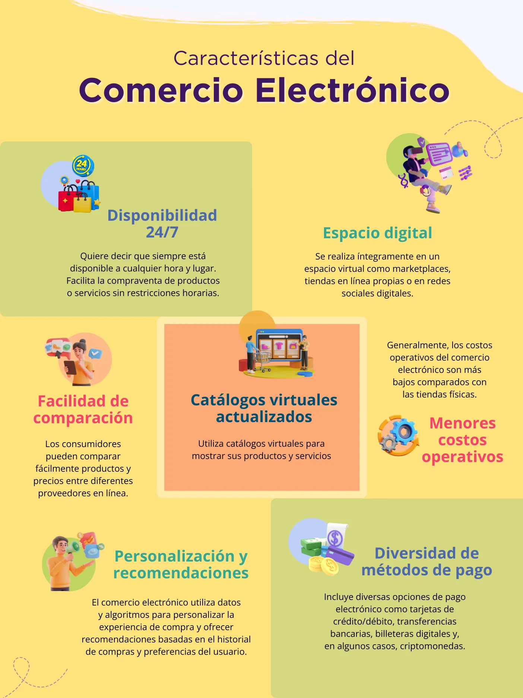
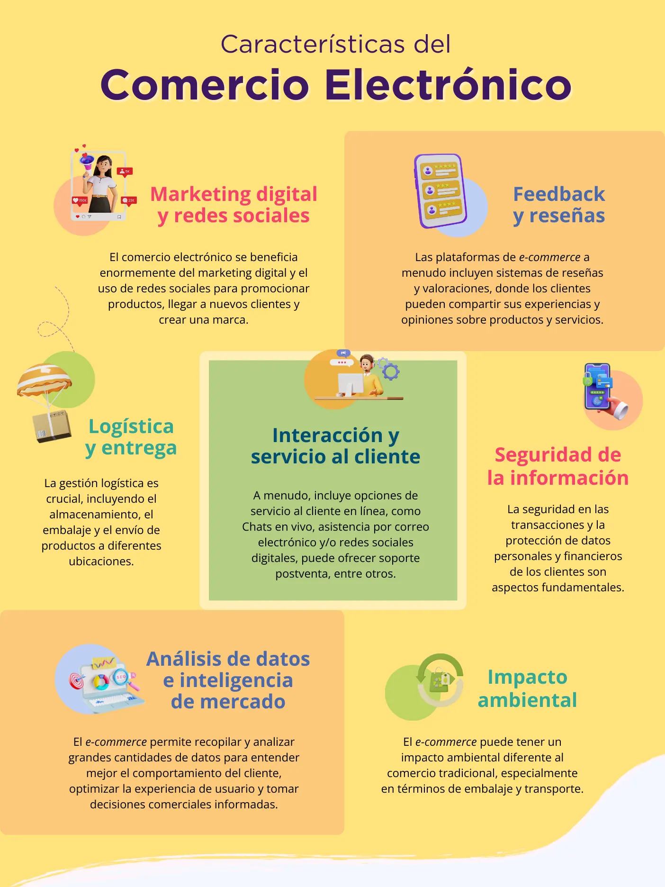

En la era actual caracterizada por el uso de tecnologías digitales y un entorno globalizado, el comercio electrónico ha emergido como un elemento esencial para el crecimiento y éxito de las empresas. Para triunfar en este mercado digital, es fundamental comprender el proceso completo de comercio a través de Internet. Desde la concepción del producto hacia la entrega final al cliente, cada paso es crucial para garantizar una experiencia de compra satisfactoria y un flujo eficiente de operaciones.
En este contexto global mundial, las pequeñas y medianas empresas (pymes) enfrentan grandes desafíos uno de ellos es el comercio electrónico, que ofrece grandes ventajas en el mercado global, les permite reducir costos, aumentar los ingresos y entender mejor a los clientes.
Las pymes tienen que profundizar en el conocimiento del comercio electrónico y modelos de negocio para competir en mercados más amplios, ello contribuirá a la supervivencia del negocio y más a su crecimiento.
Iniciamos explorando el proceso de desarrollo de nuevos productos, identificando al cliente adecuado para después, seleccionar las plataformas de comercio electrónico y pasarelas de pago más adecuadas para llegar al segmento de mercado seleccionado.
Abordaremos los temas de la cadena de suministro y logística para la elaboración del producto hasta su entrega, para asegurarse de que el proceso sea fluido y eficiente.
De acuerdo con la Organización para la Cooperación y el Desarrollo Económico (OCDE) el comercio electrónico también conocido como e-commerce se refiere a los actos comerciales realizados a través de medios electrónicos (Internet). Alude a las transacciones de venta o compra de bienes o servicios realizados en redes computacionales a través de métodos específicamente designados para el propósito de recibir o generar órdenes de compra o venta.
La Organización Mundial de Comercio (OMC), define como “La producción, publicidad, venta y distribución, comercialización, venta o entrega de bienes y servicios por medios electrónicos” algunos ejemplos pueden ser los pagos móviles y en línea y la compra de productos tangibles e intangibles, vía Internet.
Una transacción de comercio electrónico se puede dar entre empresas, hogares, individuos, gobiernos y otras organizaciones públicas o privadas, realizadas a través de Internet.
En el contexto del comercio electrónico hay varios actores y procesos involucrados, como la gestión de pagos, logística, atención postventa, infraestructura tanto de hardware como de software necesaria para operar eficientemente en el ámbito digital. Además, el comercio electrónico ofrece beneficios tanto para empresas como para los consumidores, como el acceso a mercados más amplios, reducción de barreras de entrada y costos operativos, y una mayor diversidad en la oferta de bienes y servicio
El comercio electrónico o digital presenta una serie de características que lo definen y que lo diferencian del comercio tradicional, a continuación, el detalle de las más reconocidas:
De lo anterior se derivan ocho características únicas del comercio electrónico, ver detalle en el siguiente cuadro:
Un modelo de negocio es la forma en que una empresa crea, entrega y captura valor para sus clientes, socios y accionistas. Es la lógica interna que sigue una empresa para conseguir ingresos y beneficios. Un modelo de negocio bien diseñado puede ser la clave para el éxito de una pyme, ya que le permite diferenciarse de la competencia, satisfacer las necesidades de los consumidores y generar valor para todos los involucrados.
En síntesis, un modelo de negocio tiene que ver con la forma en que una empresa se organiza para generar valor para sus clientes y obtener las ganancias suficientes para subsistir y mantenerse en el mercado de manera satisfactoria.
Para una pyme es fundamental definir su modelo de negocio adaptado a las nuevas condiciones digitales del mercado. El modelo de negocio se convierte en la guía estratégica que le permitirá expandir su alcance y operar de manera eficiente y competitiva.
Un modelo de negocio sustentado en el comercio electrónico es la columna vertebral de la pyme que le dará la pauta de cómo la empresa generará ingresos, identificará su segmento de clientes objetivo y ofrecerá valor a esos clientes.
Así, el comercio electrónico representa para las pymes un abanico de posibilidades y oportunidades para la visibilidad, el posicionamiento y la venta de productos y servicios. Permite expandir el negocio a otros mercados y zonas geográficas con miras a mejorar la competitividad y la calidad de productos y servicios.
Existe diversidad de modelos de negocio que tienen como base el comercio electrónico, los más comunes o reconocidos son B2C (empresa a consumidor), B2B (empresa a empresa), C2C (consumidor a consumidor), C2B (consumidor a empresa), D2C (directo al consumidor).
Laudon y Traver (2014: 90) clasifican el comercio electrónico de acuerdo con el tipo de entidad que participa en las transacciones o procesos empresariales.
Las empresas comprenden que su crecimiento está en continuo desarrollo y lanzan productos nuevos y mejores. La renovación continua parece ser la única manera de impedir que la empresa se vuelva obsoleta.
Por otro lado, hay emprendedores que no tienen una empresa para desarrollar productos, pero sí tienen una idea de negocio que les gustaría lanzar al mercado.
Para ambos casos, Fischer y Espejo (2011:114) recomiendan utilizar el proceso de desarrollo de nuevos productos para planear y lanzar productos o servicios. Este proceso tiene seis etapas, las cuales podemos observar en la Figura 2.
La segmentación de mercados es una etapa crucial en la implementación del comercio electrónico para una empresa. Implica dividir el mercado en grupos más pequeños y homogéneos con características y comportamientos similares.
Al realizar este proceso se podrá entender mejor quiénes son los clientes potenciales, qué buscan, cuáles son sus intereses y cómo prefieren interactuar con la marca en el mundo digital.
Para profundizar en este tema y aprender cómo desarrollar una segmentación de mercados efectiva, consulta el eje temático de arquetipos de clientes en esta plataforma de Economía del Dato, ahí se encuentra una guía detallada y ejemplos para identificar y definir el segmento de mercado.
Una tienda en línea es el canal de comunicación entre la empresa y los potenciales clientes. En ella se podrá tener una bitácora de ventas, un inventario, catálogos y hasta brindar una mejor experiencia de usuario al permitir que éstos dejen comentarios y emitan calificativos sobre los productos o servicios.
Existen diversas formas de construir una tienda en línea, tales como contratar a un programador o diseñador web; hacerlo a través de un sistema de gestión de contenidos (CMS) dedicado al comercio electrónico, o bien utilizar un Marketplace como Mercado libre o Amazon. Para efectos de esta sección se clasificará de acuerdo con el orden de mención como experto, CMS y Marketplace para compartir sus características particulares.
Uno de los principales retos al crear un comercio electrónico es elegir una opción para crear la tienda en línea. Es importante considerar diversos elementos para tomar la mejor decisión según las necesidades y objetivos de la empresa. A continuación, se presentan los principales elementos que se deben contemplar al momento de tomar una decisión:
Si se consideran los elementos previamente mencionados, la empresa podrá tomar una decisión informada sobre la implementación del comercio electrónico en su organización, optimizando recursos y con miras al logro de los objetivos del negocio.
Una vez que se tiene un panorama más amplio sobre las diversas opciones, a continuación, se indican los administradores de contenido y Marketplace más populares, que también se abordan en el eje de Medios de pago que se encuentra en la Dimensión Estrategia y transformación digital de esta plataforma de Economía del dato.
Administradores de contenidos
Para profundizar la información te recomendamos visitar la sección de canales de ventas y medios de pago en el eje del mismo nombre de esta Dimensión de Comunicación y canales de venta.
3.3.1 Pasarelas de pago
Una pasarela de pago es un servicio que permite a los comerciantes aceptar pagos en línea. Las pasarelas de pago actúan como intermediarios entre los comerciantes y las instituciones financieras, procesando los pagos y transfiriendo los fondos al comerciante.
El uso de una pasarela de pago brinda beneficios como:
Algunas de las pasarelas de pago más populares son:
Para la creación de tiendas en línea, algunas de las plataformas ya incluyen pasarelas de pago. No obstante, si se crearon con un experto es probable que se requiera una.
Al escoger una pasarela de pago se sugiere revisar qué comisiones cobran y cuáles se ajustan al presupuesto de la empresa, observar qué métodos de pago admiten ya que en ocasiones no siempre aceptan todas las tarjetas de crédito o débito, y cuáles de ellas terminan la transacción dentro del sitio web, pues si envían al cliente a otro sitio diferente puede provocar desconfianza. Para profundizar en las pasarelas de pago, sugerimos consultar el eje de Medios de pago digital que se encuentra en la Dimensión Estrategia y transformación digital de esta misma plataforma de Economía del Dato.
Un comercio electrónico tiene dos momentos claves para su elaboración que son el diseño de la cadena de suministro y la logística. En ocasiones se consideran dos temas por separado pero la realidad es que uno depende del otro. Es importante conocer la diferencia para aplicarlo dentro de la empresa.
Según Romero (2022), la logística “es un conjunto de procedimientos que facilitan la coordinación de un producto desde su fabricación hasta el cliente final”.
Por otro lado, para Quintal (2022), una cadena de suministro se relaciona con “todas las actividades para el comercio de un producto, desde que se obtienen las materias primas, durante la producción, el almacenamiento y distribución hasta el consumidor final”.
En ocasiones se cree que la importancia de la cadena de suministro reside solamente en la logística de los productos. Sin embargo, este proceso incluye a los proveedores, almacenes, centro de distribución, transportistas, incluso el servicio al cliente, manejo de órdenes y marketing, entre otros. La cadena de suministro permite la gestión y administración con el objetivo principal de reducir costos generales y aumentar la rentabilidad de la empresa (Quintal, 2022).
Cuanto mejor y más eficaz sea la gestión de la cadena de suministro de una empresa, se protegerá su reputación empresarial y su sostenibilidad a largo plazo.
En un entorno digital, donde la rapidez y la eficiencia son esenciales, una cadena de suministro y logística bien gestionadas garantizan que los productos sean entregados de manera oportuna y en óptimas condiciones a los clientes. Desde el momento que se recibe un pedido en línea hasta la entrega final al cliente, cada eslabón es crucial para mantener la satisfacción del cliente.
La coordinación efectiva entre proveedores, almacenamiento, logística y distribución es vital para evitar retrasos y errores, así como para optimizar los costos operativos. En la Figura 3 se ilustra un ejemplo de cuáles podrían ser los eslabones para contemplar dentro del comercio electrónico, pudiendo variar de acuerdo con la industria.
Para profundizar en el tema de la cadena de suministro, sugerimos consultar el eje de Logística que se encuentra en la Dimensión Procesos de esta plataforma de Economía del Dato.
Una vez seleccionado el segmento de mercado, elaborado el producto o servicio, planeadas la cadena de suministro y logística y creada una tienda en línea en la plataforma más conveniente, la etapa final es la elaboración de un programa de comunicación para dar a conocer a la empresa.
La comunicación de la marca del negocio es un elemento crítico para el éxito de un negocio digital. Hacerlo de manera efectiva permite conectar con los clientes, establecer una relación de confianza y mantener a la audiencia informada y comprometida.
La comunicación digital incluye la creación de contenido relevante y atractivo para los canales digitales como la tienda en línea, redes sociales, correos, chatbots y blogs.
Para profundizar en este importante tema y aprender cómo desarrollar una comunicación efectiva consulta el eje temático de canales digitales de comunicación detallado en esta Dimensión de Comunicación y canales de venta, de esta plataforma de Economía del Dato. Encontrarás una guía detallada sobre cómo utilizar cada canal de manera estratégica, cómo crear contenido relevante y atractivo y, cómo gestionar de manera óptima la comunicación con los clientes.
Cárdenas, J. (2021). Guía de cómo elaborar la política de privacidad de tu empresa según los parámetros legales. Rock Content - ES. https://rockcontent.com/es/blog/politica-de-privacidad/
Fischer, L., & Espejo, J. (2011). Mercadotecnia (4.a ed.). McGraw-Hill/Interamericana Editores, S.A. de C.V.
Galán, J. S. (2022a). Costos operativos. Economipedia. https://economipedia.com/definiciones/costos-operativos.html
IBM. (2023). ¿Qué es la gestión de la cadena de suministro? https://www.ibm.com/mx-es/topics/supply-chain-management
Mailchimp. (s.f.). ¿Qué es un certificado SSL? | Mailchimp. https://mailchimp.com/es/resources/what-is-ssl-certificate/
Laudon, K. C., & Traver, C. G. (2014). E-commerce 2013: negocios, tecnología, sociedad.
Licari, S. (2023). ¿Qué es una lluvia de ideas? Ejemplos y técnicas eficaces. Hubspot. https://blog.hubspot.es/marketing/tecnicas-lluvia-de-ideas-creativas
Quintal, P. (2022). Cadena de suministro: ¿Qué es y cuál es su importancia? Blog del E-commerce. https://www.tiendanube.com/mx/blog/cadena-de-suministro/
Romero, C. (2022). ¿Cuál es la diferencia entre logística y cadena de suministro? -. Blog del E-commerce.
https://www.tiendanube.com/mx/blog/diferencia-entre-logistica-y-cadena-de-suministro/